"Un grand pouvoir implique une grande responsabilité."
Prêt à concevoir, développer et sécuriser les applications de demain.
Capacités débloquées — Cliquer sur un nœud pour voir ses connexions.
Historique des opérations, stages et projets SLAM.
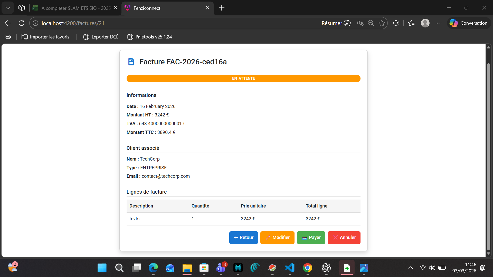
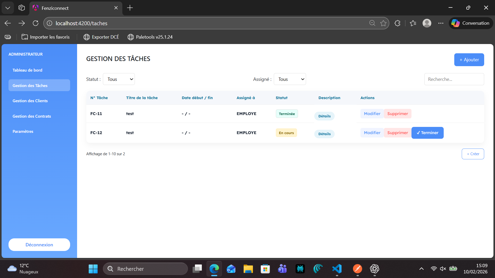
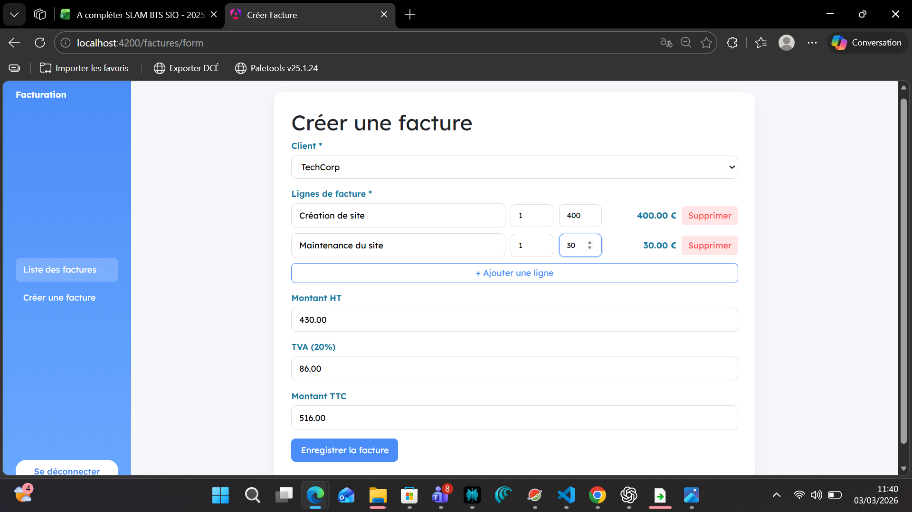
Module de Facturation & Workflow Enterprise
Conception d'une API REST Spring Boot + dashboard Angular avec gestion du cycle de vie des factures, calcul automatique HT/TVA/TTC et filtrage temps réel.
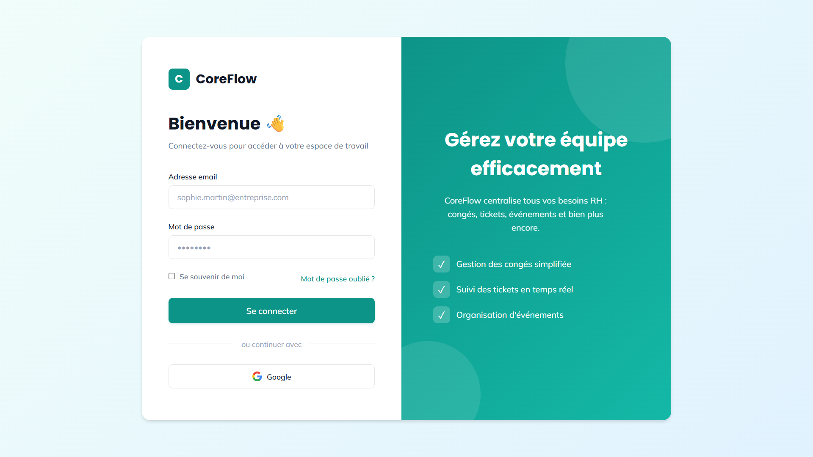
Quête Annexe E5BTS SIO 2ème Année — Épreuve E5
Plateforme intranet d'entreprise regroupant la gestion des congés, des événements internes, des tickets support et l'accès aux documents selon les rôles.
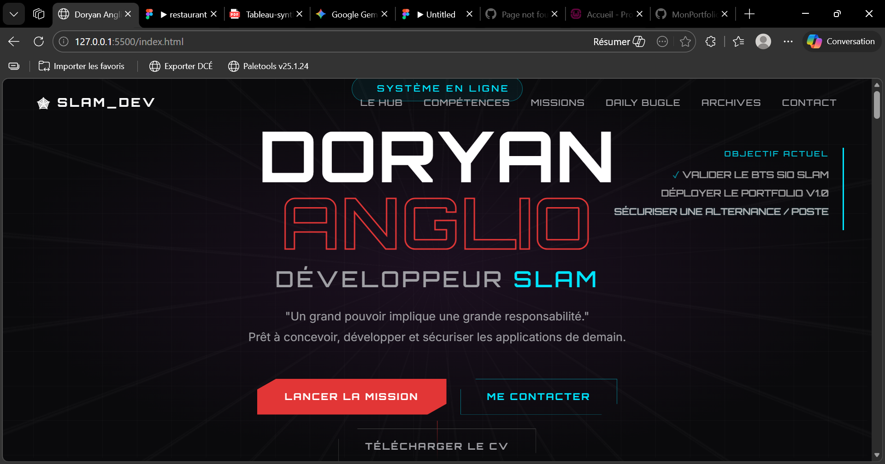
Quête Annexe IA +Projet Personnel — Design Gaming × Dev Pro
Portfolio entièrement sur-mesure inspiré du HUD de Spider-Man 2 PS5. L'idée : fusionner l'esthétique d'un jeu AAA avec un portfolio professionnel — pour se démarquer de tous les templates.
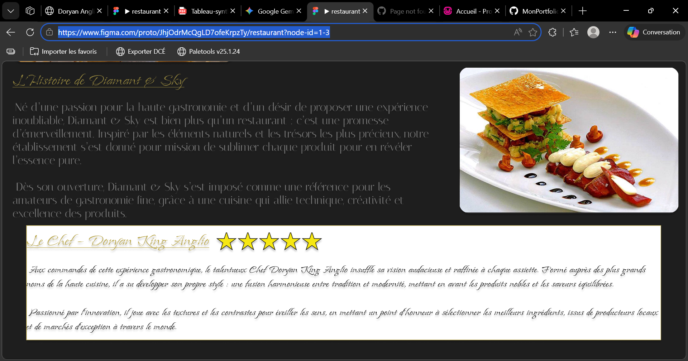
Quête Annexe Figma TPTP Imposé — Cours BTS SIO 1ère Année
Conception d'une maquette haute-fidélité pour un restaurant gastronomique fictif : charte graphique élaborée, wireframes, prototype interactif navigable sur Figma.
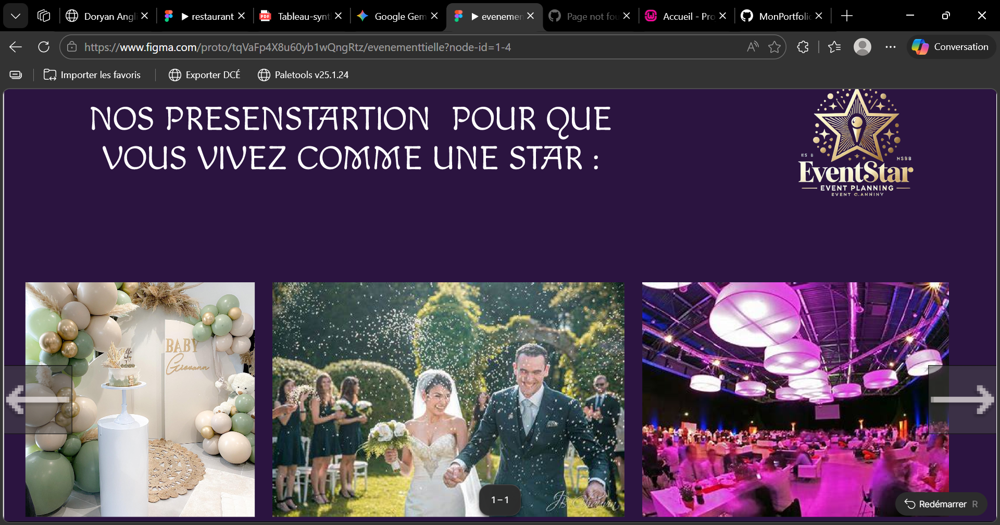
Quête Annexe Figma LibreProjet Libre — Cours BTS SIO 1ère Année
Conception libre d'une interface pour une agence événementielle : identité visuelle personnalisée, système de navigation, galerie portfolio et formulaire de contact.
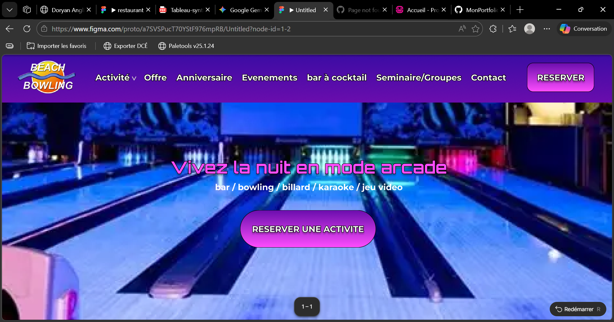
Quête Annexe Initiative ProProjet Personnel — Démarche Client Freelance
Conception d'une maquette site vitrine non sollicitée pour un bowling avec jeux d'arcane à Belle Épine. Démarche commerciale autonome pour proposer mes services en freelance.
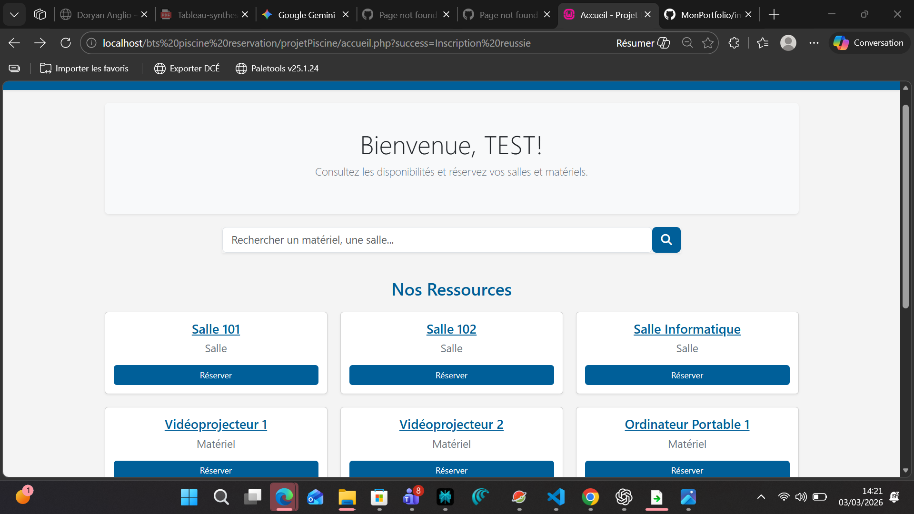
Quête Annexe 1ère annéeProjet Piscine — BTS SIO × BTS CIEL
Application web PHP/MySQL de gestion de réservations de ressources scolaires avec affichage conditionnel des disponibilités en temps réel.
Workshop Master 2 — Analyse de Données
Dashboard d'analyse du marché des sneakers conçu lors d'un atelier animé par des étudiants Master 2 : exploration des données, visualisations interactives et KPIs clés sur Power BI.
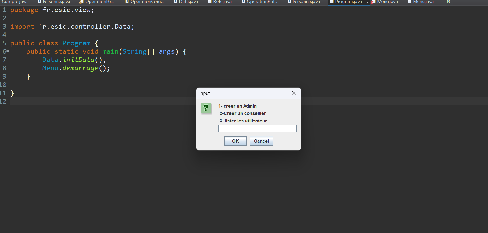
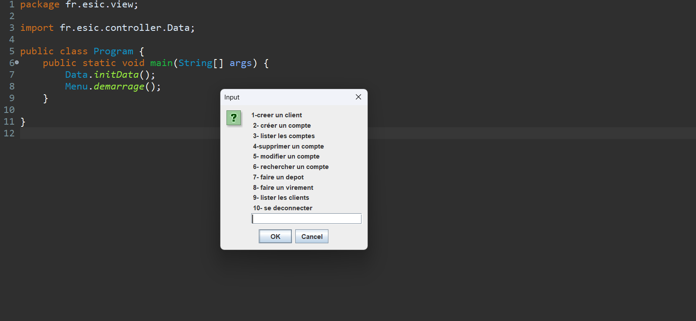
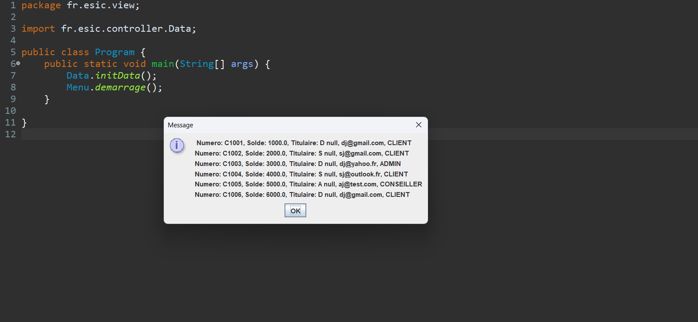
Projet Cours — BTS SIO SLAM
Application bureau Java MVC de gestion de comptes bancaires : authentification avec rôles Admin/Client, modèle orienté objet (Compte, Personne), logique métier via contrôleurs dédiés.
Veille Technologique — L'IA générative dans le développement Fullstack Angular / Spring Boot
GitHub Copilot, Claude, ChatGPT — depuis 2024, les assistants IA ne sont plus des gadgets expérimentaux mais des outils intégrés au quotidien du développeur fullstack. Sur une stack Angular / Spring Boot comme celle utilisée lors de mon stage chez FenziConnect, ces outils ont permis d'accélérer le scaffolding, de réduire le temps passé sur les tâches répétitives (CRUD, formulaires, documentation) et d'accélérer la montée en compétence sur Angular en autonomie. Mais l'IA ne remplace pas le développeur : la sécurité des API, la logique métier et la revue de code restent une responsabilité humaine irremplaçable.
Lire la synthèse complète →Dossiers classifiés — Documents officiels du parcours BTS SIO SLAM.
Développement ERP FenziConnect — Module Facturation & Gestion des Tâches. Stack Angular / Spring Boot.
Développeur Fullstack — BTS SIO SLAM. Disponible pour alternance ou premier poste.
Développement d'applications web, base de données relationnelle, tests logiciels, travail en équipe Agile.
Tableau de synthèse des compétences E4 et E5 — Récapitulatif des situations professionnelles significatives.
Convention tripartite — Étudiant / Établissement / FenziConnect. Document confidentiel.